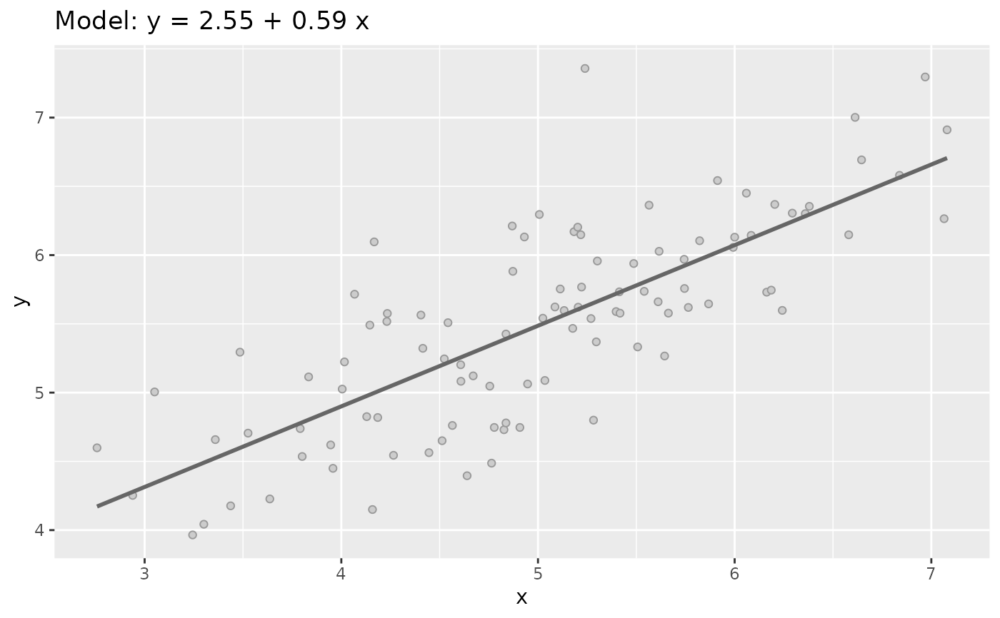
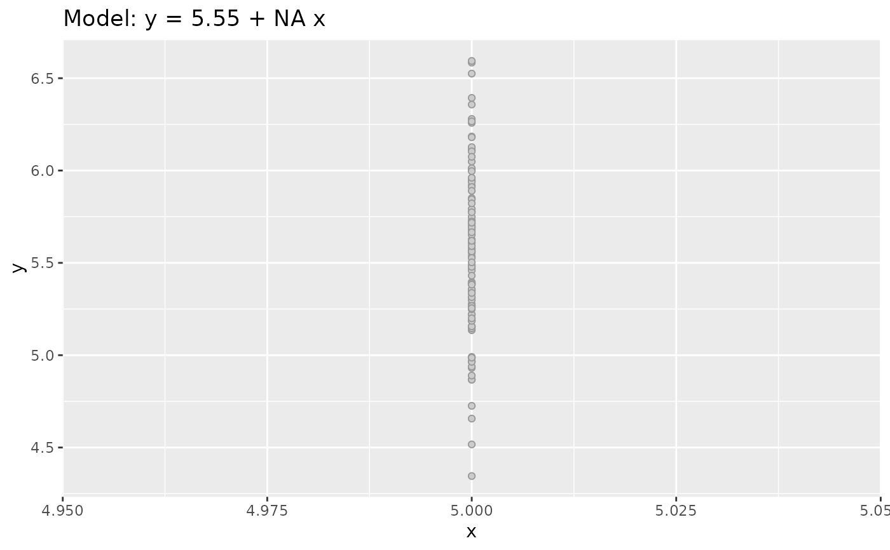
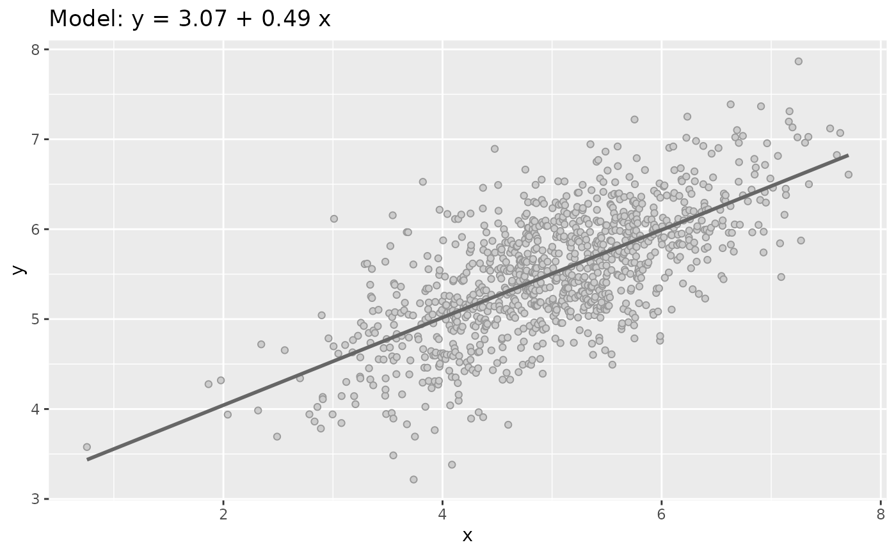
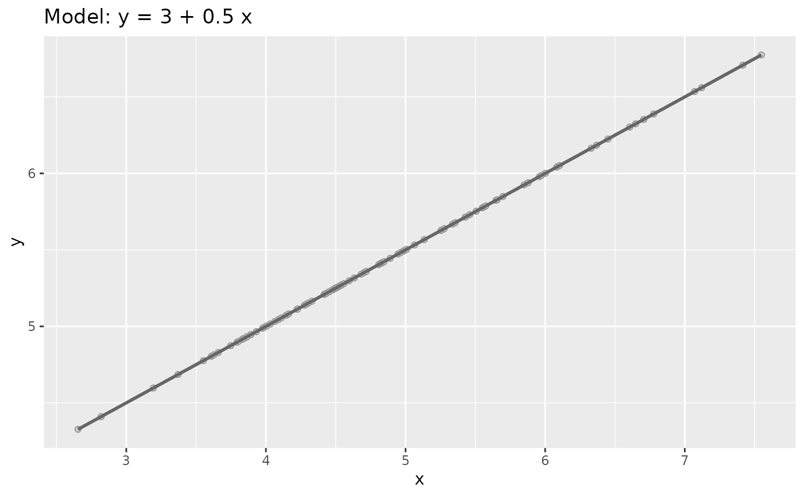
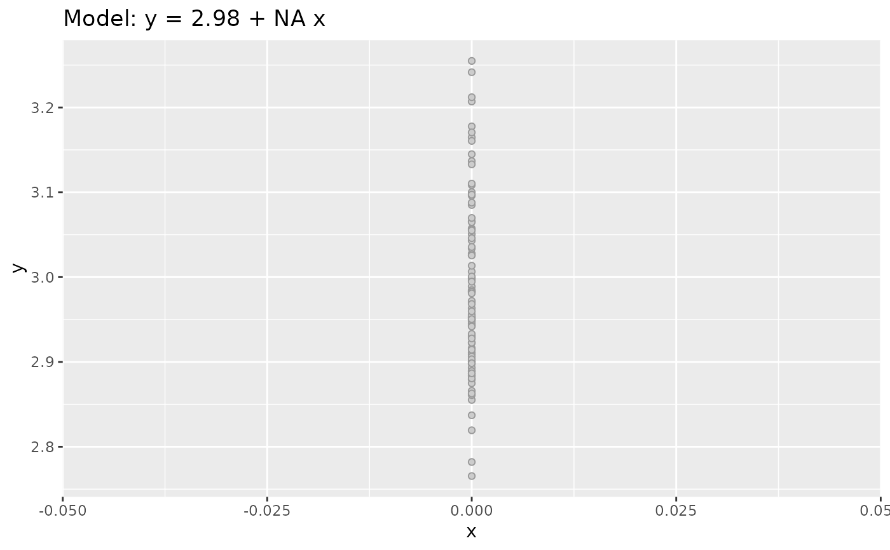

This function generate a data set Type 1 creating first a x a random vector
then apply a linear transformation using beta0 and beta1 and finally
adding a normal distributed noise using error_sd creating y values.
Usage
sim_quasianscombe_set_1(
n = 100,
beta0 = 3,
beta1 = 0.5,
error_sd = 0.5,
x_mean = 5,
x_sd = 1,
x_dist = "norm"
)Arguments
- n
n, default value: 100
- beta0
beta0, default value: 3,
- beta1
beta1, default value: 0.5
- error_sd
error_sd, default value: 0.1
- x_mean
x_mean, default value: 5
- x_sd
x_sd, default value: 1
- x_dist
x_dist, default value: "norm"
Examples
df <- sim_quasianscombe_set_1()
df
#> # A tibble: 100 × 2
#> x y
#> <dbl> <dbl>
#> 1 2.76 4.60
#> 2 2.94 4.25
#> 3 3.05 5.00
#> 4 3.24 3.97
#> 5 3.30 4.04
#> 6 3.36 4.66
#> 7 3.44 4.18
#> 8 3.48 5.29
#> 9 3.53 4.71
#> 10 3.64 4.23
#> # … with 90 more rows
plot(df)

plot(df, add_lm = FALSE)

plot(sim_quasianscombe_set_1(n = 1000))

plot(sim_quasianscombe_set_1(error_sd = 0))

plot(sim_quasianscombe_set_1(x_sd = 0))
